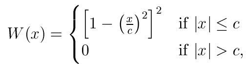
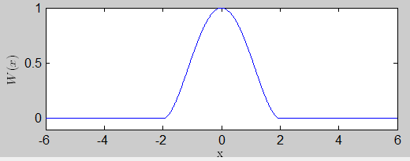

| Flexible Statistics Data Analysis Toolbox™ |
|
Compute W (weight) function (ψ(x)/x)) for Tukey biweight
It transforms vector x as follows. Generally x is a vector containing residuals or Mahalanobis distances.

where c is a tuning constant which is linked to the breakdown point/efficiency of the estimator.
Remark: Tukey's biweight wei-function is almost linear around x = 0 in accordance with Winsor's principle that all distributions are normal in the middle. This means that \wei (x)/x is approximately constant over the linear region of \wei, so the points in that region tend to get equal weight.
weiTB = TBwei(u,c)
y = TBwei(u,c) applies W function to the elements of vector u. u is a n x 1 vector containing residuals or Mahalanobis distances for the n units of the sample and c scalar greater than 0 which controls the robustness/efficiency of the estimator
x=-6:0.01:6;
weiTB=TBwei(x,2);
plot(x,weiTB)
xlabel('x','Interpreter','Latex')
ylabel('$W (x)$','Interpreter','Latex')

|
|
tbrho.html | tclust.html |
|